LFMN — Liga de Simracing
Lo más grande que construí: una plataforma para administrar toda una liga de simracing de Assetto Corsa — pilotos, categorías, campeonatos y carreras — con ingesta automática de sesiones reales del servidor, motor de rating Elo/Safety Rating y su propio tribunal de comisarios.
Rol
Desarrollo fullstack — backend por capas, seguridad por roles y frontend en Angular.
Stack
Spring Boot 4.1 · Java · Angular · MySQL · Spring Security · JWT · Docker
Cifras
≈180 endpoints · ≈28 entidades JPA · +27 tablas relacionadas · +100 requisitos documentados (RF-001 → RF-100)
Estado
Desplegado y en línea · lfmn.vercel.app ↗
Qué gestiona esta liga
Una plataforma web completa para la administración de una liga de simracing de Assetto Corsa: pilotos, categorías, campeonatos, carreras e inscripciones, con ingesta automática de sesiones reales desde el servidor del juego.
Qué construí
- Gestión de pilotos, categorías, campeonatos, carreras e inscripciones.
- Ingesta automática de sesiones reales (JSON de clasificación y carrera).
- Sistema de rating Elo y Safety Rating recalculados automáticamente.
- Incidentes con votación de comisarios y sanciones apelables.
- Setups con valoraciones, logros, recompensas y notificaciones.
- Autenticación con JWT e integración externa con Steam OAuth.
- Panel de administración con roles USUARIO / ADMIN / COMISARIO.
Bajo el capó
- Arquitectura por capas sobre ≈180 endpoints y ≈28 entidades JPA.
- Modelo relacional en MySQL con +27 tablas relacionadas.
- +100 requisitos documentados (RF-001 → RF-100) y diagramas UML.
- Spring Security con JWT e inicio de sesión por Steam OAuth.
- Frontend en Angular y despliegue con Docker.
Capturas
Doce vistas de la plataforma en funcionamiento.
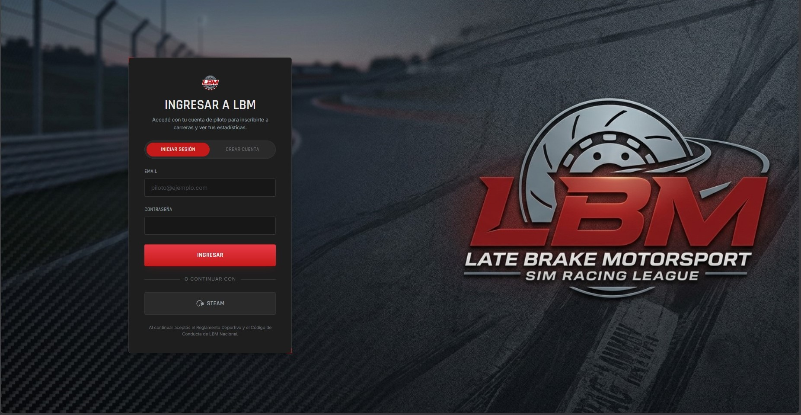
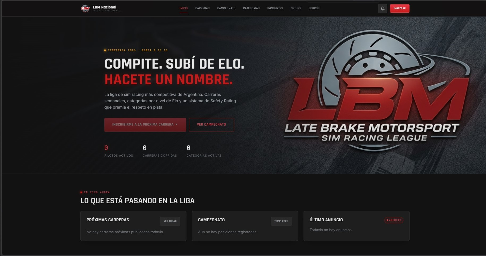
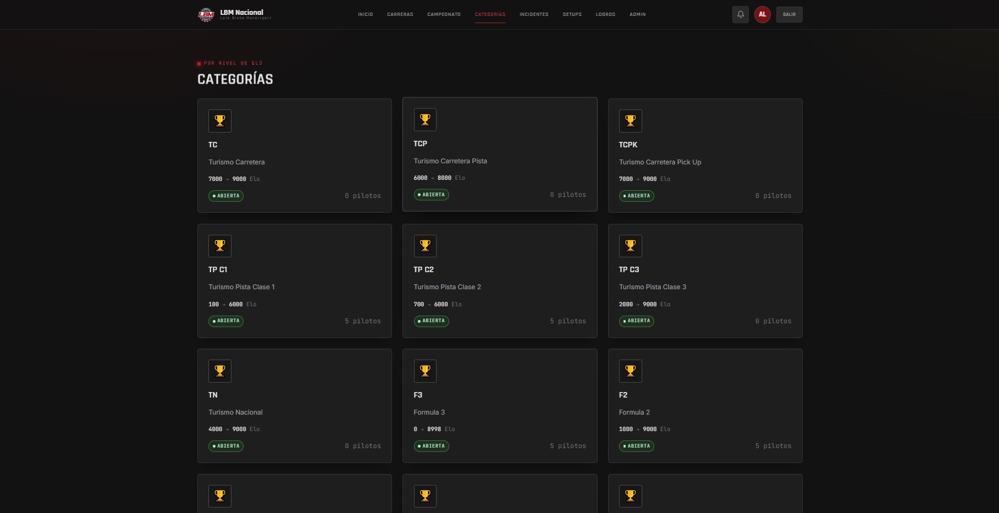
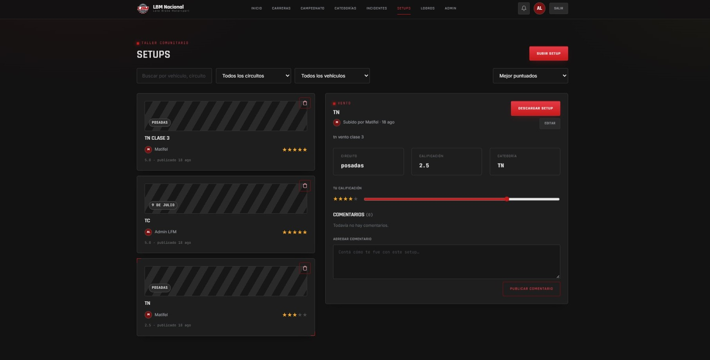
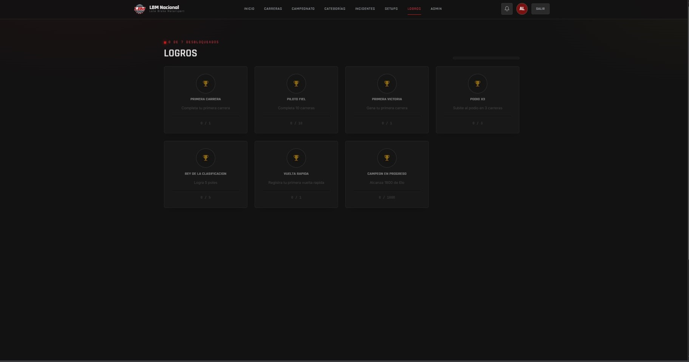
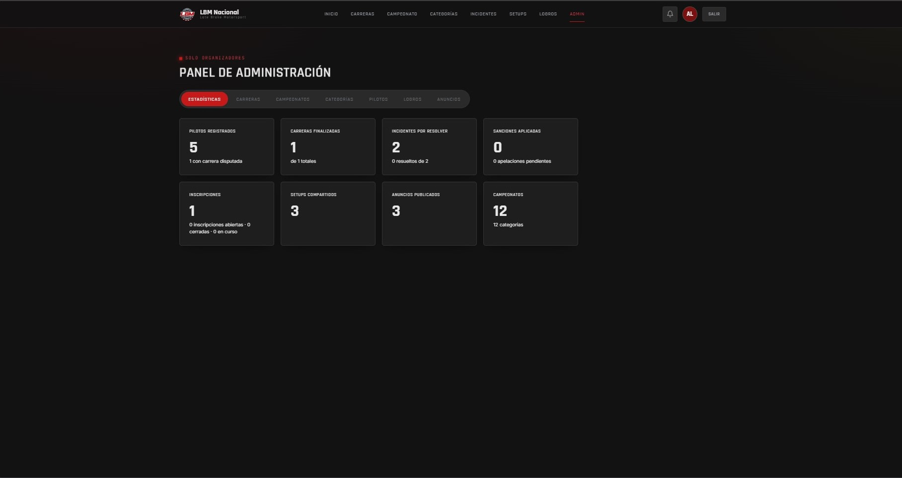
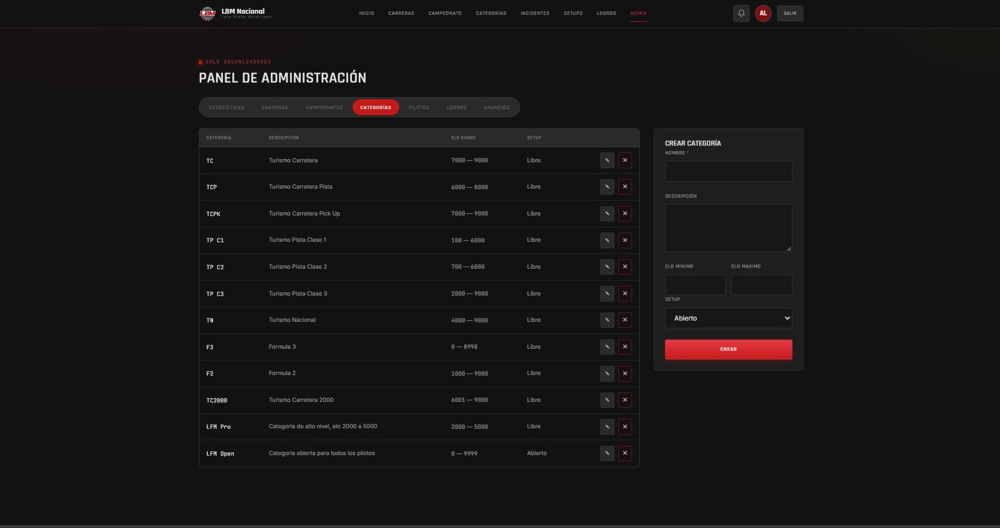
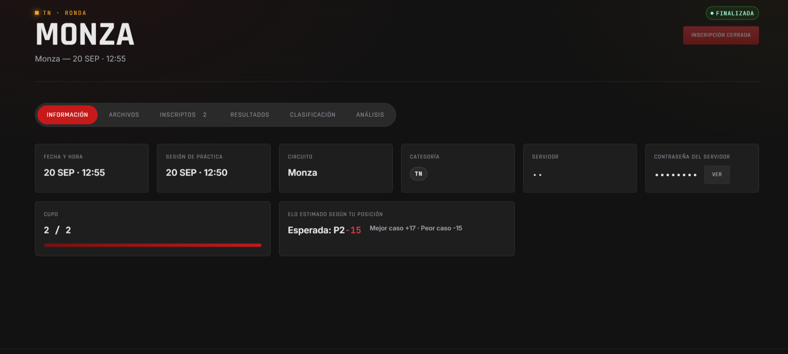
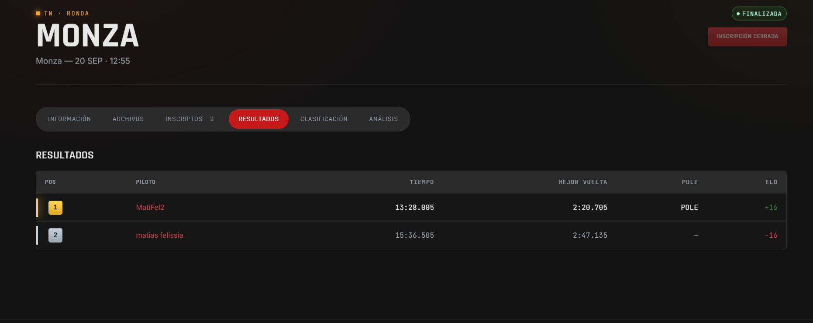
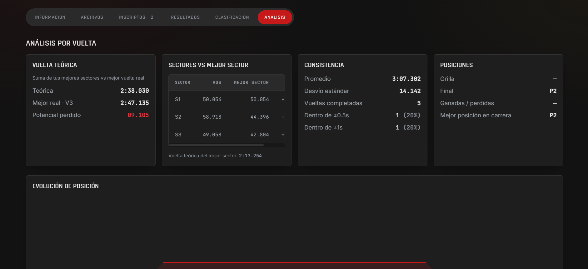
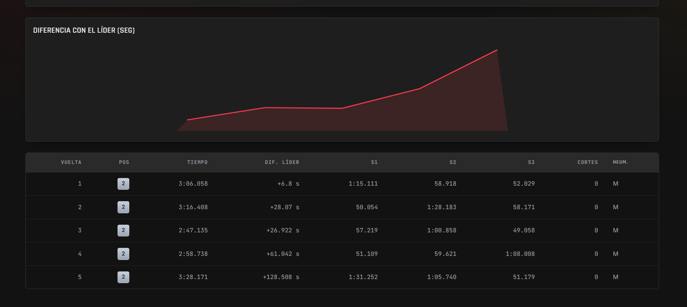
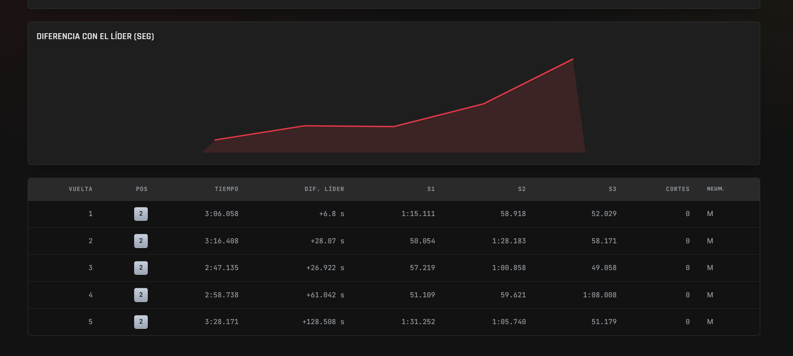